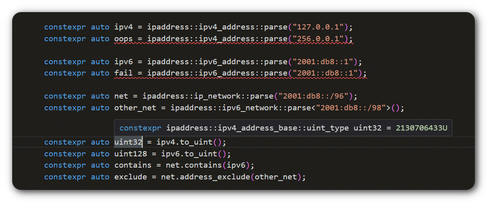

A library for working and manipulating IPv4/IPv6 addresses and networks in modern C++.
[!IMPORTANT] THE LIBRARY IS CURRENTLY UNDER ACTIVE DEVELOPMENT AND NOT YET READY FOR USE!
Introduction
This cross-platfrom header-only library (for C++11 and newer) is inspired by the ipaddress API in Python, from which it derives its name. It aims to be simpler to use due to its familiar interface. However, the C++ implementation takes a different approach: it uses static polymorphism through the strategy pattern instead of dynamic polymorphism to handle differences between IP versions (IPv4 and IPv6). This design choice eliminates the overhead of dynamic calls and virtual tables. For instance, an instance of the ipv4_address class will be represented by 4 bytes.
The library leverages modern C++ features, ensuring that all IP address and network operations support constant expressions.

Errors are known at Compile Time
Compatibility
The library has been tested on the following compilers:
- Clang 6.0.1 and newer;
- Apple Clang 13.0.0 and newer;
- GCC 7.5.0 and newer;
- MSVC 14.29 (Visual Studio 16.11) and newer
Installation
You can install in one of the following ways
Use package managers
[!IMPORTANT] Packages have not been published yet
Vcpkg
Conan
Snapcraft
Then, if you use CMake for build, you need to link the target:
cmake_minimum_required(VERSION 3.8.0)
project(my-project LANGUAGES CXX)
find_package(ipaddress CONFIG REQUIRED)
add_executable(my_project main.cpp)
target_link_libraries(my_project ipaddress::ipaddress) # add the library to your target
Use as a Submodule with CMake
Go to your project directory and add a submodule:
cd my_project
git submodule add https://github.com/VladimirShaleev/ipaddress.git third-party/ipaddress/
then in the CMake project add it to the directory:
cmake_minimum_required(VERSION 3.8.0)
project(my_project LANGUAGES CXX)
add_subdirectory(third-party/ipaddress)
add_executable(my_project main.cpp)
target_link_libraries(my_project ipaddress::ipaddress) # add the library to your target
Use CMake FetchContent
cmake_minimum_required(VERSION 3.8.0)
project(my_project LANGUAGES CXX)
include(FetchContent)
FetchContent_Declare(
ipaddress
GIT_REPOSITORY https://github.com/VladimirShaleev/ipaddress
GIT_TAG v1.0.0
)
FetchContent_MakeAvailable(ipaddress)
add_executable(my_project main.cpp)
target_link_libraries(my_project ipaddress::ipaddress) # add the library to your target
Quick Start
The library provides capabilities for creating, analyzing and managing IPv4 and IPv6 addresses and networks using classes such as ipv4_address, ipv6_address, ip_address (any IP version), ipv4_network, ipv6_network and ip_network (any IP version). It also offers error handling methods with or without exceptions if for some reason exceptions are not used or disabled in your project.
To start using the library, simply include the header ipaddress/ipaddress.hpp, and you’re ready to begin your work!
Here is an example demonstrating some of the library's features (this example can be compiled with C++14 or higher):
#include <iostream>
void parse_ip_sample() {
constexpr auto ip = ipv6_address::parse("fec0::1ff:fe23:4567:890a%eth2");
constexpr auto is_site_local = ip.is_site_local();
std::cout << "ip " << ip << " is local: " << std::boolalpha << is_site_local << std::endl;
std::cout << "DNS PTR " << ip.reverse_pointer() << std::endl << std::endl;
}
void teredo_sample() {
constexpr auto teredo_ip = "2001:0000:4136:e378:8000:63bf:3fff:fdd2"_ipv6;
auto [server, client] = teredo_ip.teredo().value();
std::cout << "server: " << server << " and client: " << client << " for " << teredo_ip << std::endl << std::endl;
}
void subnets_sample() {
constexpr auto net = ipv4_network::parse("192.0.2.0/24");
std::cout << "subnets for " << net << ':' << std::endl;
for (const auto& subnet : net.subnets(2)) {
std::cout << " " << subnet << std::endl;
}
constexpr auto last_subnet = net.subnets(2).back();
std::cout << "last subnet " << last_subnet << std::endl;
}
int main() {
parse_ip_sample();
teredo_sample();
subnets_sample();
return 0;
}
The main include file for the ipaddress library.
Namespace dedicated to IP addresses and networks operations.
Definition base-v4.hpp:18
Contributing
ipaddress welcomes contributions and appreciates contributions from the community. Please follow the code below.
Issues
We welcome you to submit any issues or enhancement requests. When doing so, please provide minimal reproducible examples, as source code is often more effective in helping others understand the issue. If you encounter crash problems on specific platforms, please include operating system and compiler information.
Pull Requests
We welcome pull requests for fixes and features. To avoid any unnecessary time investment, we strongly recommend opening an issue to discuss whether the proposed PR aligns with our guidelines.
To do this, follow these steps:
- Fork the repository on GitHub.
- Clone the project to your local machine and create a new branch within your fork. Start your development work on this branch.
- Test your changes. If possible, include unit tests for IPv4 addresses, IPv6 addresses, IP addresses, IPv4 networks, IPv6 networks, or IP networks, depending on the modifications you’ve made.
- Commit your changes to your branch.
- Push your work back to your fork on GitHub.
- Finally, submit a pull request so that we can review your changes.
NOTE: Be sure to merge the latest from "upstream" before making a pull request!
Currently, I am the sole maintainer of this project. Therefore, I will monitor questions, suggestions, as well as community activity and interest in this project to the best of my abilities.
Licensing
MIT License
Copyright (c) 2024 Vladimir Shaleev
Permission is hereby granted, free of charge, to any person obtaining a copy
of this software and associated documentation files (the "Software"), to deal
in the Software without restriction, including without limitation the rights
to use, copy, modify, merge, publish, distribute, sublicense, and/or sell
copies of the Software, and to permit persons to whom the Software is
furnished to do so, subject to the following conditions:
The above copyright notice and this permission notice shall be included in all
copies or substantial portions of the Software.
THE SOFTWARE IS PROVIDED "AS IS", WITHOUT WARRANTY OF ANY KIND, EXPRESS OR
IMPLIED, INCLUDING BUT NOT LIMITED TO THE WARRANTIES OF MERCHANTABILITY,
FITNESS FOR A PARTICULAR PURPOSE AND NONINFRINGEMENT. IN NO EVENT SHALL THE
AUTHORS OR COPYRIGHT HOLDERS BE LIABLE FOR ANY CLAIM, DAMAGES OR OTHER
LIABILITY, WHETHER IN AN ACTION OF CONTRACT, TORT OR OTHERWISE, ARISING FROM,
OUT OF OR IN CONNECTION WITH THE SOFTWARE OR THE USE OR OTHER DEALINGS IN THE
SOFTWARE.